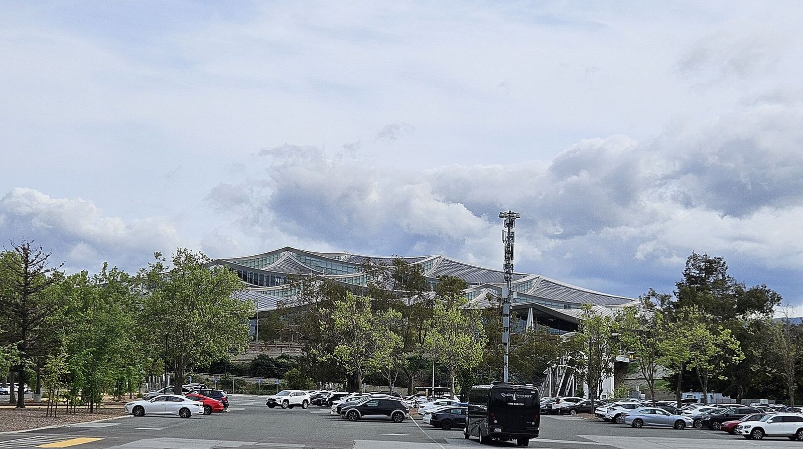

谷歌宣布推出 Gemini 4 Neon：称其在 xhigh 思考档上 Artificial Analysis Intelligence Index 为 61，整体排名第 3；定价为每百万输入 token 3 美元（缓存输入 0.15 美元，折扣 95%）、每百万输出 token 15 美元，上下文窗口为 100 万 token；即日起在 Gemini API、面向企业的 Gemini、Google Antigravity 以及 Gemini 应用的 Google AI Pro 与 Ultra 订阅用户中推出


谷歌于 2026 年 11 月 18 日在官方博客宣布推出 Gemini 4 Neon。署名作者为 Google DeepMind 高级副总裁兼谷歌首席人工智能架构师 Koray Kavukcuoglu。新闻稿将该模型概括为：在复杂软件工程、知识工作与科学工作流中，提供前沿水平的智能，并更快地端到端完成任务。文章写明，Neon 在 xhigh 思考档上的 Artificial Analysis Intelligence Index 为 61，在可比模型中靠前，整体排名第 3，位于更大、更慢的模型之后；在 Vals Index 上排名第 2，并处于帕累托前沿。文章还称，在新的 Agent Arena Index 的可引导性（steerability，即干净地适应任务中途的用户纠正）上，Neon 排名第 2；并在内部 Google Antigravity 测试中录得迄今最低的虚构率。
今天，我们推出 Gemini 4 Neon——在复杂软件工程、知识工作与科学工作流中，提供前沿水平的智能，并更快地端到端完成任务。
定价方面，谷歌写明：每百万输入 token 3 美元，每百万缓存输入 token 0.15 美元（折扣 95%），每百万输出 token 15 美元，上下文窗口为 100 万 token。供稿范围方面，文章称 Neon 即日起在 Google AI Studio 的 Gemini API、面向企业的 Gemini（通过 API 与模型下拉菜单）、付费 Google AI Pro 与 Ultra 订阅用户的 Google Antigravity，以及 Pro 与 Ultra 订阅用户的 Gemini 应用中推出。文末的“即日起开始推出”清单还写明：开发者可在 Google AI Studio 与 Android Studio 的 Gemini API 付费层使用；企业可在面向企业的 Gemini 与 Google Antigravity 中使用；消费者若为 Google AI Pro 或 Ultra 订阅用户，可在 Gemini 应用的模型下拉菜单中选择 Gemini 4 Neon。
评测数字方面，谷歌称：独立评测将 Neon 列为领先模型之一；在 Vals Index 上排名第 2（70.9%），并在 Legal Research Bench 与 Tax Agent Bench 上均位列第 1。文章还称，Neon 在 Surge AI 的多数金融、会计、电子表格建模与复杂约束遵循基准上排名第 1；在 Chartography 上为 73.5%；在 Agents' Last Exam v1.1 上为 75.8%，与领先模型相当；在 Zapier 的 AutomationBench 上以 56.3% 总体第 1；在 Andon Labs 的 Vending-Bench 2 上以 16,843 美元总体第 1；并在 Arena 新的 Agent Arena Index 上以 1336 分全球第 2，覆盖 4,200 余场真实代理会话。科学与数学方面，文章称 Neon 在 Terminal-Bench Science（70.5%）、RiemannBench（84.0%）与 HLE-Diamond（71.3%）上为同类最佳。编码方面，文章称其在 Artificial Analysis Coding Agent Index 上以 58.6 总体第 1，Terminal-Bench 4.1 为 65.2%，在默认 high 设置下 FrontierCode 2.0 为 46.2%；在 SWE-sweep 的 mini-SWE harness 上为 12.8%，并称在 Google Antigravity 中升至 39.0%。文章还写明，Neon 可单独运行，也可在 Google Antigravity 中作为编排器，调度并行的 Hydrogen 子代理。
效率与安全方面，谷歌称 Neon 有四档思考级别；在默认 high 思考档上，其每任务成本比 Carbon 低 32%；在 Vals 与 Agent Arena 的帕累托前沿上，每任务成本比顶尖竞品前沿模型大约低 50% 至 80%；xhigh 档给出其最高智能分数，每任务成本仍比竞品最高档低 36% 以上。网络安全方面，文章称 Neon 在 AutoBaxBench 的困难档上达到 76% 的当前最优，在 WebExploitBench v1.2 上达到 51.26% 的当前最优且成本约为大型竞品模型的一半，在 SEC-bench Pro 上为 90.5% 的当前最优，在 Collinear 的 CWE-bench v2 上为 70.7%，较 Carbon 提高 3.4 个百分点。面向网络防御的 Gemini 4 Neon for cyber，文章称将在随后几天向 Fairwind Program 中的合格成员开放。定位方面，谷歌写明：Carbon 应对最艰难、长周期的项目，Hydrogen 负责快速的日常执行，Neon 则在深度与效率之间取得平衡。
摘记，不是官方媒体。标题、数字、供稿范围与评测表述均转述谷歌 11 月 18 日官方博客，未独立复现这些基准。